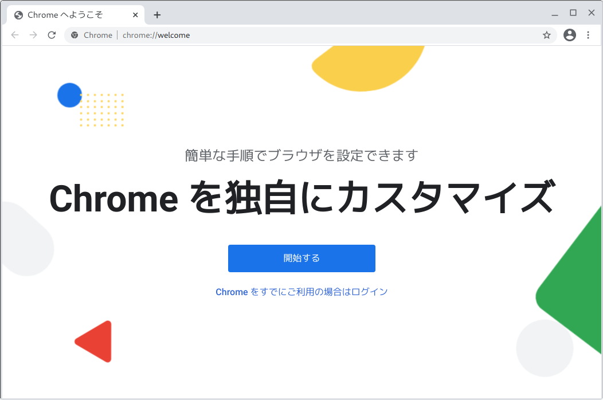
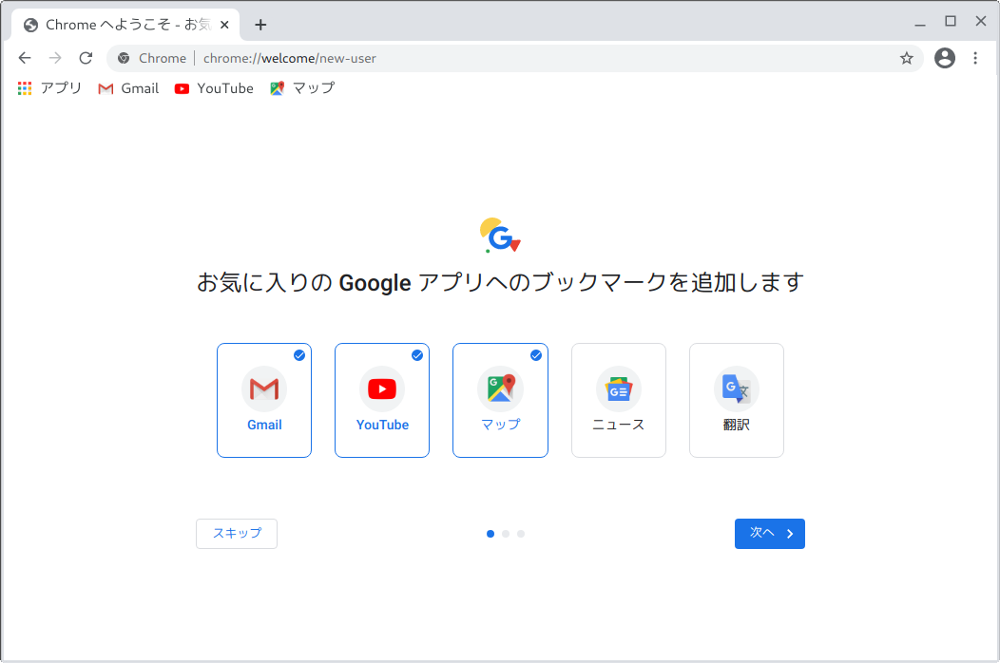
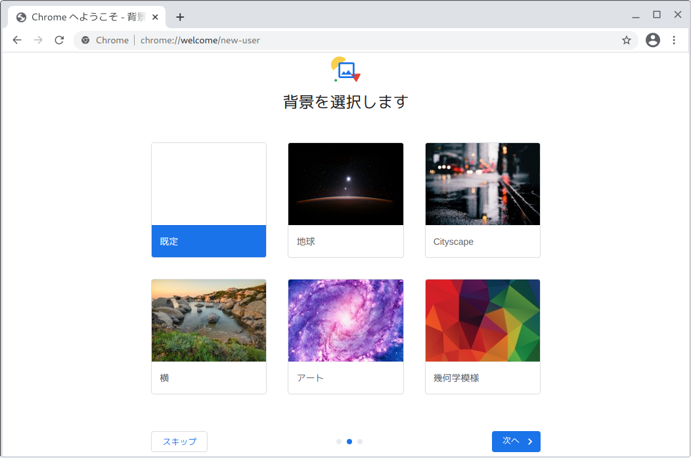
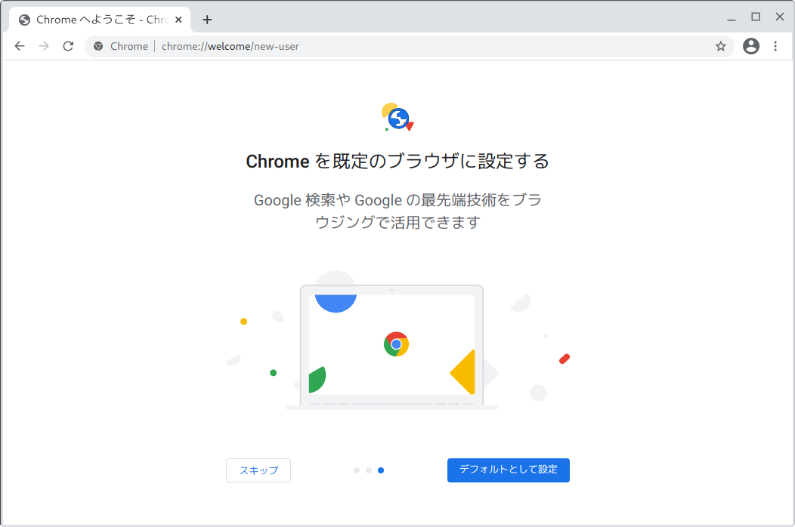
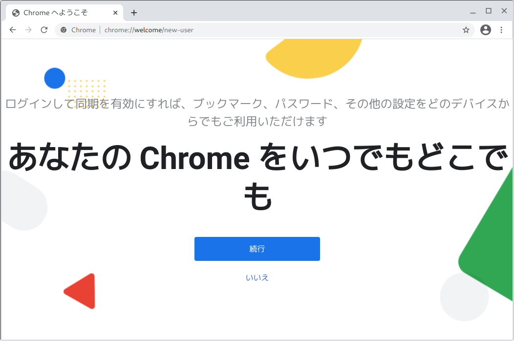
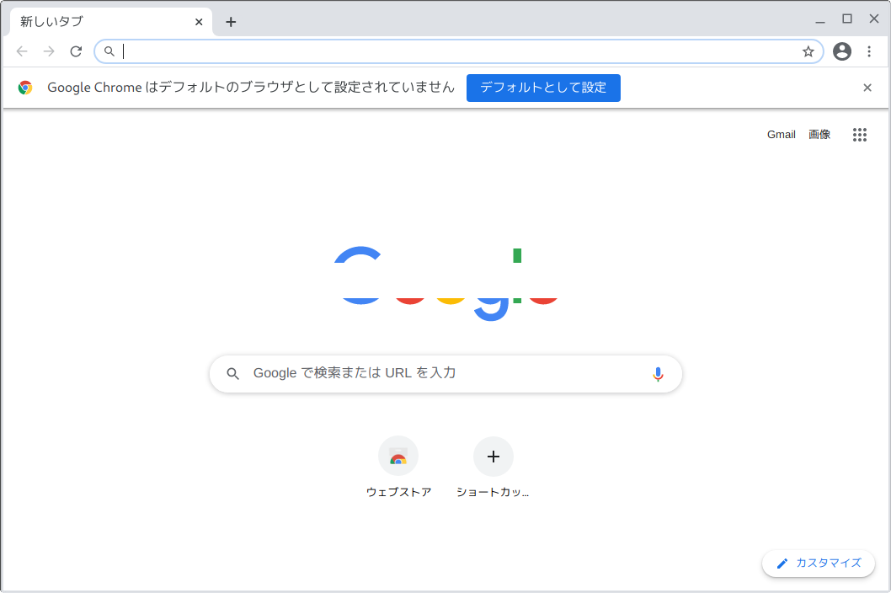

# apt install ./google-chrome-stable_current_amd64.deb
パッケージリストを読み込んでいます... 完了
依存関係ツリーを作成しています
状態情報を読み取っています... 完了
注意、'./google-chrome-stable_current_amd64.deb' の代わりに 'google-chrome-stable' を選択します
以下のパッケージが新たにインストールされます:
google-chrome-stable
アップグレード: 0 個、新規インストール: 1 個、削除: 0 個、保留: 0 個。
72.7 MB 中 0 B のアーカイブを取得する必要があります。
この操作後に追加で 239 MB のディスク容量が消費されます。
取得:1 /home/user/デスクトップ/google-chrome-stable_current_amd64.deb google-chrome-stable amd64 87.0.4280.66-1 [72.7 MB]
以前に未選択のパッケージ google-chrome-stable を選択しています。
(データベースを読み込んでいます ... 現在 205737 個のファイルとディレクトリがインストールされています。)
.../google-chrome-stable_current_amd64.deb を展開する準備をしています ...
google-chrome-stable (87.0.4280.66-1) を展開しています...
google-chrome-stable (87.0.4280.66-1) を設定しています ...
update-alternatives: /usr/bin/x-www-browser (x-www-browser) を提供するために自動モードで /usr/bin/google-chrome-stable を使います
update-alternatives: /usr/bin/gnome-www-browser (gnome-www-browser) を提供するために自動モードで /usr/bin/google-chrome-stable を使います
update-alternatives: /usr/bin/google-chrome (google-chrome) を提供するために自動モードで /usr/bin/google-chrome-stable を使います
mime-support (3.62) のトリガを処理しています ...
man-db (2.8.5-2) のトリガを処理しています ...
menu (2.1.47+b1) のトリガを処理しています ...
desktop-file-utils (0.23-4) のトリガを処理しています ...
正常にインストールされたら、デスクトップのメニューに Google Chrome
が自動的に登録されます。このメニューを選択して起動させます。初回起動時にはGoogle Chrome
の初期設定を対話的に行うことになります。以下の手順で設定を進めることになります。確認画面でOKを選択すれば標準の設定となります。
上記は最初の起動時に現れるメッセージです。チェックを外すことが可能です。
「開始する」を選択します。
「スキップ」をクリックすればブックマークへは追加しません。
変更ないときは「スキップ」を選びます。
試用する場合は「スキップ」を選択します。
ブラウザの同期を希望しないのなら「いいえ」を選びます。
右上の☓印で画面を終了させます。
以上で初期設定が完了します。これですぐ使える状態になりますが、設定の詳細項目で不要なサービスが稼働していないか見直すことをお推めします。 Chrome をデフォルト（既定）のブラウザに設定する必要はありません。デフォルトでは大半のサービスが有効となっています。Chrome と大変似通ったブラウザに Chromium があります。これは Chrome から複数の機能を機能を省き、ソースコードを公開したブラウザです。Chromium は Google Chrome のテスト版のような扱いとされています。ネット上に解説記事は見つかりますが、実際にどんな機能が省略されているのかは一般には明確ではありません。
Chromium の開発はオープンソース・プロジェクトという立場です。したがって、これは主要なディストリビューションより自由に再配布されているので簡単にインストール可能となっています。